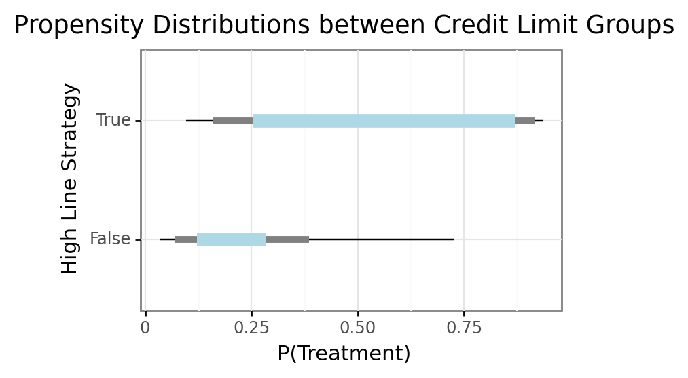
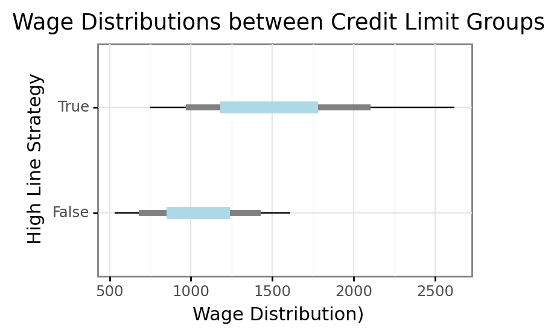
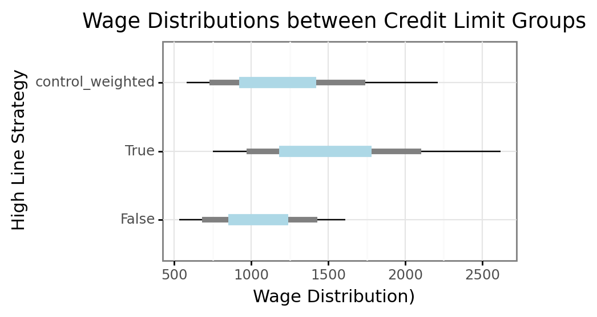

import numpy as np
import pandas as pd
import scipy as sp
import os
from pygam import GAM, s, te
from plotnine import *
DATA_PATH = '../../data/causal-inference-in-python-code/causal-inference-in-python/data/'
#print(os.getcwd())Untitled
# command shift i
risk_df = pd.read_csv(DATA_PATH + 'risk_data.csv')
print(risk_df.shape)
risk_df.head()(50000, 8)| wage | educ | exper | married | credit_score1 | credit_score2 | credit_limit | default | |
|---|---|---|---|---|---|---|---|---|
| 0 | 950.0 | 11 | 16 | 1 | 500.0 | 518.0 | 3200.0 | 0 |
| 1 | 780.0 | 11 | 7 | 1 | 414.0 | 429.0 | 1700.0 | 0 |
| 2 | 1230.0 | 14 | 9 | 1 | 586.0 | 571.0 | 4200.0 | 0 |
| 3 | 1040.0 | 15 | 8 | 1 | 379.0 | 411.0 | 1500.0 | 0 |
| 4 | 1000.0 | 16 | 1 | 1 | 379.0 | 518.0 | 1800.0 | 0 |
# [np.quantile(risk_df['credit_limit'], q) for q in np.arange(0, 1.1, .1)]
# [200.0, 1200.0, 1700.0, 2100.0, 2400.0, 2700.0, 3100.0, 3500.0, 3900.0, 4700.0, 8500.0]
risk_mid_df = risk_df.query('credit_limit >= 2400').copy()
risk_mid_df['high_line'] = risk_mid_df['credit_limit'] > 3900
risk_mid_df[['wage', 'credit_score1', 'credit_score2', 'high_line', 'default']].groupby('high_line').agg('mean')| wage | credit_score1 | credit_score2 | default | |
|---|---|---|---|---|
| high_line | ||||
| False | 1052.997436 | 473.614161 | 487.485089 | 0.149302 |
| True | 1520.383802 | 565.398207 | 547.135892 | 0.097411 |
## simple model
high_line_propensity_model_data = risk_mid_df[['wage', 'credit_score1', 'credit_score2']]
high_line_propensity_model_dv = risk_mid_df['high_line'] * 1
high_line_propensity_model = GAM(s(0) + s(1) + s(2), distribution = 'binomial', link = 'logit')
high_line_propensity_model = high_line_propensity_model.fit(high_line_propensity_model_data, high_line_propensity_model_dv)
risk_mid_df['phat'] = high_line_propensity_model.predict_mu(high_line_propensity_model_data)# ggplot(risk_mid_df, aes(x = 'phat', fill = 'high_line')) + geom_density(alpha = .4) + xlab('$P(High Line)$') + ggtitle('Propensity Model Predictions by Treatment Group')
# def gg_bardist(data, x, y, intervals = [0.95, 0.8, 0.5], **kwargs):
# x_var = x
# x_ = data[x_var]
# y_var = y
# y_ = data[y_var]
# ys = list(map(lambda i: np.quantile(y_, [(1 - i)/2, 0.5 + i/2]), intervals))
# plot_ = ggplot(data, aes(x = x_var, y = y_var), **kwargs)
# plot_ += geom_linerange(aes(x = x_var, ymin = ys[0][0], ymax = ys[0][1]), size = .5)
# plot_ += geom_linerange(aes(x = x_var, ymin = ys[1][0], ymax = ys[1][1]), size = 2, color = 'grey')
# plot_ += geom_linerange(aes(x = x_var, ymin = ys[2][0], ymax = ys[2][1]), size = 4, color = 'lightblue')
# return plot_
def interval_ranges_df(df, y, group, intervals = [0.95, 0.8, 0.5]):
int_list = list()
for i in intervals:
i_df = df.groupby(group).apply(lambda df: pd.Series(dict(
ymin = np.quantile(df[y], (1 - i)/2),
ymax = np.quantile(df[y], 0.5 + i/2)
))).reset_index()
i_df['interval'] = str(i)
int_list.append(i_df)
int_df = pd.concat(int_list)
return int_df
def gg_interval_dist(interval_df, x):
x_var = x
del x
plot_ = ggplot(interval_df, aes(x = x_var, ymin = 'ymin', ymax = 'ymax'))
plot_ += geom_linerange(interval_df.query('interval == "0.95"'), size = 0.5)
plot_ += geom_linerange(interval_df.query('interval == "0.8"'), size = 2, color = 'grey')
plot_ += geom_linerange(interval_df.query('interval == "0.5"'), size = 4, color = 'lightblue')
return plot_
phat_dist_df = interval_ranges_df(risk_mid_df, y = 'phat', group = 'high_line')
gg_interval_dist(phat_dist_df, x = 'high_line') + xlab('High Line Strategy') + ylab('P(Treatment)') + ggtitle('Propensity Distributions between Credit Limit Groups') + coord_flip() + theme_bw() + theme(figure_size = (4, 2.5)) + labs(caption = 'Bars show 95-80-50% Data Interval')
# gg_bardist(risk_mid_df, 'high_line', 'phat') +
# ylab('P(High Line)') +
# xlab('High Line Treatment') +
# ggtitle('Distribution of ')
# ggplot(risk_mid_df, aes(x = 'phat', fill = 'high_line')) + geom_histogram(alpha = .4, position = 'dodge') + xlab('$P(High Line)$') + ggtitle('Propensity Model Predictions by Treatment Group')
risk_mid_df.groupby('high_line').apply(lambda df: pd.Series(dict(
size = df.shape[0],
weight = np.sum(df['phat']),
other_weight = np.sum(1 - df['phat'])
)))| size | weight | other_weight | |
|---|---|---|---|
| high_line | |||
| False | 21058.0 | 4603.417117 | 16454.582883 |
| True | 9927.0 | 5323.582883 | 4603.417117 |
wage_dist_df = interval_ranges_df(risk_mid_df, group = 'high_line', y = 'wage')
gg_interval_dist(wage_dist_df, x = 'high_line') + xlab('High Line Strategy') + ylab('Wage Distribution)') + ggtitle('Wage Distributions between Credit Limit Groups') + coord_flip() + theme_bw() + theme(figure_size = (4, 2.5)) + labs(caption = 'Bars show 95-80-50% Data Interval')
## restrict to control obs
risk_mid_control = risk_mid_df.query('high_line == False').copy()
## assign higher weights to those with the highest p(T), which means we divide by the 1 - P(T)
risk_mid_control['control_weights'] = 1 / (1 - risk_mid_control['phat'])
## normalize to sum to 1
risk_mid_control['control_weights'] = risk_mid_control['control_weights'] / np.sum(risk_mid_control['control_weights'])
## resample a dataframe the same size as the treatment
risk_mid_control_weighted = risk_mid_control.sample(n = risk_mid_df.query('high_line == True').shape[0], replace = True, weights = 'control_weights')
print(np.mean(risk_mid_control['phat']))
print(np.mean(risk_mid_control_weighted['phat']))0.21860656839480097
0.3193194517225654risk_combined_df = pd.concat([
risk_mid_df.assign(high_line = lambda df: df['high_line'].astype('str')),
risk_mid_control_weighted.assign(high_line = 'control_weighted')
])
wage_dist_wdf = interval_ranges_df(risk_combined_df, group = 'high_line', y = 'wage')
gg_interval_dist(wage_dist_wdf, x = 'high_line') + xlab('High Line Strategy') + ylab('Wage Distribution)') + ggtitle('Wage Distributions between Credit Limit Groups') + coord_flip() + theme_bw() + theme(figure_size = (4, 2.5)) + labs(caption = 'Bars show 95-80-50% Data Interval')